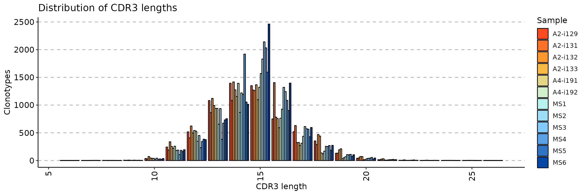
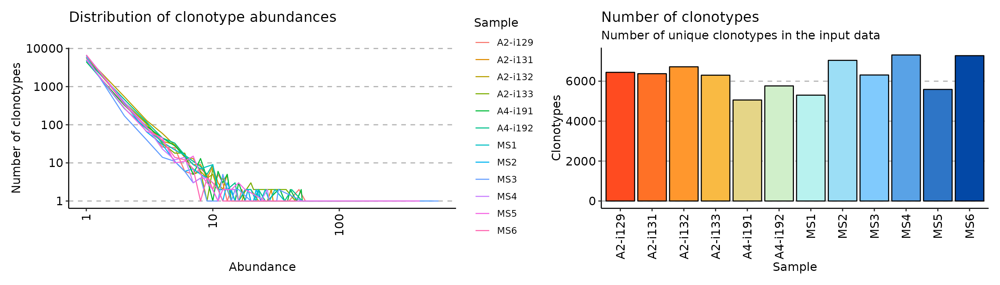

Basic analysis and clonality
ImmunoMind – improving design of T-cell therapies using multi-omics and AI. Research and biopharma partnerships, more details: immunomind.io
support@immunomind.io
Source:vignettes/web_only/v3_basic_analysis.Rmd
v3_basic_analysis.RmdBasic analysis
For each task in this section immunarch includes separate functions that are generally self-explanatory and are written in camel-case.
Note: all functions in immunarch require that the input immune repertoire data list have names. If you use the repLoad function, you will have no issues. If you compose your list by-hand, you must name elements in the list, e.g.:
your_data # Your list with repertoires without names
names(your_data)
# Output: NULL
names(your_data) <- sapply(1:length(your_data), function(i) paste0("Sample", i))
names(your_data)
# Output: Sample1 Sample2 ... Sample10Basic analysis functions are:
repExplore- to compute basic statistics, such as number of clones or distributions of lengths and counts. To explore them you need to pass the statistics, e.g.count, to the.method.repClonality- to compute the clonality of repertoires.repOverlap- to compute the repertoire overlap.repOverlapAnalysis- to analyse the repertoire overlap, including different clustering procedures and PCA.geneUsage- to compute the distributions of V or J genes.geneUsageAnalysis- to analyse the distributions of V or J genes, including clustering and PCA.repDiversity- to estimate the diversity of repertoires.trackClonotypes- to analyse the dynamics of repertoires across time points.spectratype- to compute spectratype of clonotypes.getKmersandkmer_profile- to compute distributions of kmers and sequence profiles.
How to visualise analysis results
Output of each analysis function could be passed directly to the vis function - the general function for visualisation. Examples of usage are written below. Almost all visualisations of analysis results are support grouping data by their respective properties from the metadata table or using user-supplied properties. Grouping is possible by passing either .by argument or by passing both .by and .meta arguments to the vis function.
- You can pass
.byas a character vector with one or several column names from the metadata table to group your data before plotting. In this case you should provide also the.metaargument with the metadata table.
exp_vol <- repExplore(immdata$data, .method = "volume")
p1 <- vis(exp_vol, .by = c("Status"), .meta = immdata$meta)
p2 <- vis(exp_vol, .by = c("Status", "Sex"), .meta = immdata$meta)
p1 + p2- You can pass
.byas a character vector that exactly matches the number of samples in your data, each value should correspond to a sample’s property. It will be used to group data based on the values provided. Note that in this case you should pass NA to.meta.
exp_vol <- repExplore(immdata$data, .method = "volume")
by_vec <- c("C", "C", "C", "C", "C", "C", "MS", "MS", "MS", "MS", "MS", "MS")
p <- vis(exp_vol, .by = by_vec)
pIf data is grouped, than statistical tests for comparing means of groups will be performed, unless .test = F is supplied. In case there are only two groups, the Wilcoxon rank sum test is performed (R function wilcox.test with an argument exact = F) for testing if there is a difference in mean rank values between two groups. In case there more than two groups, the Kruskal-Wallis test is performed (R function kruskal.test), that is equivalent to ANOVA for ranks and it tests whether samples from different groups originated from the same distribution. A significant Kruskal-Wallis test indicates that at least one sample stochastically dominates one other sample. Adjusted for multiple comparisons P-values are plotted on the top of groups. P-value adjusting is done using the Holm method (also known as Holm-Bonferroni correction). You can execute the command ?p.adjust in the R console to see more.
Plots generated by the vis function as well as any ggplot2-based plots can be passed to fixVis—built-in software tool for making publication-ready plots:
# 1. Analyse
exp_len <- repExplore(immdata$data, .method = "len", .col = "aa")
# 2. Visualise
p1 <- vis(exp_len)
# 3. Fix and make publication-ready results
fixVis(p1)See the fixVis tutorial here.
Exploratory analysis
For the basic exploratory analysis such as comparing of number of reads / UMIs per repertoire or distribution use the function repExplore.
exp_len <- repExplore(immdata$data, .method = "len", .col = "aa")
exp_cnt <- repExplore(immdata$data, .method = "count")
exp_vol <- repExplore(immdata$data, .method = "volume")
p1 <- vis(exp_len)
p2 <- vis(exp_cnt)
p3 <- vis(exp_vol)
p1
p2 + p3
# You can group samples by their metainformation
p4 <- vis(exp_len, .by = "Status", .meta = immdata$meta)
p5 <- vis(exp_cnt, .by = "Sex", .meta = immdata$meta)
p6 <- vis(exp_vol, .by = c("Status", "Sex"), .meta = immdata$meta)
p4
p5 + p6
Clonality
One of the ways to estimate the diversity of samples is to evaluate clonality. repClonality measures the amount of the most or the least frequent clonotypes. There are several methods to assess clonality, let us take a view of them. The clonal.prop method computes the proportion of repertoire occupied by the pools of cell clones:
imm_pr <- repClonality(immdata$data, .method = "clonal.prop")
imm_pr## Clones Percentage Clonal.count.prop
## A2-i129 18 10.0 0.0027556644
## A2-i131 28 10.0 0.0042728521
## A2-i133 9 10.3 0.0014077898
## A2-i132 113 10.0 0.0164987589
## A4-i191 4 11.5 0.0007773028
## A4-i192 8 10.4 0.0013738623
## MS1 2 10.1 0.0003700278
## MS2 66 10.0 0.0092372288
## MS3 2 10.6 0.0003095496
## MS4 176 10.0 0.0236336780
## MS5 3 13.2 0.0005303164
## MS6 150 10.0 0.0202456472
## attr(,"class")
## [1] "immunr_clonal_prop" "matrix" "array"The top method considers the most abundant cell clonotypes:
imm_top <- repClonality(immdata$data, .method = "top", .head = c(10, 100, 1000, 3000, 10000))
imm_top## 10 100 1000 3000 10000
## A2-i129 0.08011765 0.17282353 0.3491765 0.5844706 1
## A2-i131 0.06670588 0.15647059 0.3467059 0.5820000 1
## A2-i133 0.10505882 0.18294118 0.3655294 0.6008235 1
## A2-i132 0.02388235 0.09423529 0.3118824 0.5471765 1
## A4-i191 0.17176471 0.32047059 0.5122353 0.7475294 1
## A4-i192 0.11541176 0.22141176 0.4325882 0.6678824 1
## MS1 0.19164706 0.30894118 0.4817647 0.7170588 1
## MS2 0.04458824 0.11470588 0.2770588 0.5123529 1
## MS3 0.16482353 0.23011765 0.3575294 0.5928235 1
## MS4 0.02329412 0.07517647 0.2415294 0.4768235 1
## MS5 0.20611765 0.29188235 0.4521176 0.6874118 1
## MS6 0.02835294 0.08235294 0.2460000 0.4812941 1
## attr(,"class")
## [1] "immunr_top_prop" "matrix" "array"While the rare method deals with the least prolific clonotypes:
imm_rare <- repClonality(immdata$data, .method = "rare")
imm_rare## 1 3 10 30 100 MAX
## A2-i129 0.6991765 0.8215294 0.8710588 0.9267059 0.9604706 1
## A2-i131 0.6969412 0.8243529 0.8995294 0.9436471 0.9869412 1
## A2-i133 0.6800000 0.8100000 0.8690588 0.8974118 0.9357647 1
## A2-i132 0.7088235 0.8831765 0.9643529 0.9951765 1.0000000 1
## A4-i191 0.5355294 0.6484706 0.7189412 0.7707059 0.8697647 1
## A4-i192 0.5976471 0.7487059 0.8342353 0.8675294 0.9156471 1
## MS1 0.5780000 0.6692941 0.7438824 0.7929412 0.8571765 1
## MS2 0.7788235 0.8891765 0.9322353 0.9718824 1.0000000 1
## MS3 0.7272941 0.7825882 0.8071765 0.8385882 0.8652941 1
## MS4 0.8109412 0.9343529 0.9725882 1.0000000 1.0000000 1
## MS5 0.6112941 0.7001176 0.7575294 0.7809412 0.8284706 1
## MS6 0.8107059 0.9208235 0.9703529 0.9897647 1.0000000 1
## attr(,"class")
## [1] "immunr_rare_prop" "matrix" "array"Finally, the homeo method assesses the clonal space homeostasis, i.e., the proportion of the repertoire occupied by the clones of a given size:
imm_hom <- repClonality(immdata$data,
.method = "homeo",
.clone.types = c(Small = .0001, Medium = .001, Large = .01, Hyperexpanded = 1)
)
imm_hom## Small (0 < X <= 1e-04) Medium (1e-04 < X <= 0.001)
## A2-i129 0 0.8634118
## A2-i131 0 0.8858824
## A2-i133 0 0.8597647
## A2-i132 0 0.9542353
## A4-i191 0 0.7135294
## A4-i192 0 0.8183529
## MS1 0 0.7248235
## MS2 0 0.9244706
## MS3 0 0.8061176
## MS4 0 0.9683529
## MS5 0 0.7520000
## MS6 0 0.9625882
## Large (0.001 < X <= 0.01) Hyperexpanded (0.01 < X <= 1)
## A2-i129 0.09705882 0.03952941
## A2-i131 0.09011765 0.02400000
## A2-i133 0.07600000 0.06423529
## A2-i132 0.04576471 0.00000000
## A4-i191 0.15623529 0.13023529
## A4-i192 0.08611765 0.09552941
## MS1 0.12082353 0.15435294
## MS2 0.06411765 0.01141176
## MS3 0.05917647 0.13470588
## MS4 0.03164706 0.00000000
## MS5 0.07647059 0.17152941
## MS6 0.03741176 0.00000000
## attr(,"class")
## [1] "immunr_homeo" "matrix" "array"